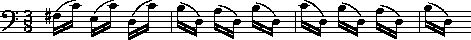

This chapter also visits a related issue of implied harmony.
Many melodic passages outline clear harmonic progressions
which are also implicated in layer-related analyses.
Implied Harmony
Example 35.1 shows a two-phrase trumpet solo from Aaron Copland's
El Salon Mexico.
Harmonic progressions may be evident only when arpeggiated figures
are collapsed.
In this case, an implicit harmony may is evident
where a G major chord is followed by a D dominant seventh chord.
The barlines provide convenient ways of parsing the harmonies.
Example 35.1 Aaron Copland, El Salon Mexico.

A
**kern
encoding of the passage is given below:
!!!COM: Copland, A. |
!!!OTL: El Salon Mexico |
**kern |
*Itromp |
*clefG2 |
*k[] |
*M4/4 |
=29 |
2r |
8r |
{8d |
8g |
8b |
=30 |
28dd |
28b |
28dd |
28b |
28dd |
28b |
28dd |
8b |
8dd |
8gg |
8dd |
8b |
8g |
=31 |
8cc |
[4.a |
8a]} |
{8d |
8f# |
8a |
=32 |
4cc |
8a |
8f# |
8d |
4dd |
8dd |
=33 |
8ff#}~ |
8r |
4r |
2r; |
= |
*- |
We can collapse the arpeggiated chords using the
context
command:
context -b = -o = copland
Identify the chords is facilitated by using the pitch-class
(**pc)
representation described in
Chapter 34.
context -b = -o = copland | pc -a | rid -d
The corresponding output is:
!!!COM: Copland, A. |
!!!OTL: El Salon Mexico |
**pc |
*Itromp |
*clefG2 |
*k[] |
*M4/4 |
2 B 2 B 2 B 2 B 2 7 2 B 7 |
0 9 9 2 6 9 |
0 9 6 2 2 2 |
6 r r r |
*- |
In order to identify these as G major and D dominant chords
it would be convenient to reduce the sets to (2,7,B)
and (0,2,6,9) respectively.
For this task, we can use a
The following awk script eliminates repeated tokens within a record:
(huniq:
We might call this script
huniq
since it acts like a horizontal version of the
uniq
command:
awk '{
# A script to eliminate repeated tokens within a record.
if ($0 ~ /^[!*]/) {print $0; next}
else
{
array[$1] = line = $1
for (i=2; i<=NF; i++)
{
if (array[$i] == "") {array[$i]=$i; line = line " " $i}
}
print line
for (i in array) delete array[i]
}
}' $1
Applying this script to our output
!!!COM: Copland, A.
!!!OTL: El Salon Mexico
**pc
*Itromp
*clefG2
*k[]
*M4/4
r 2 7 B
2 B 7
0 9 2 6
0 9 6 2
6 r
*-
Identifying implicit harmonic intervals can be a little
more taxing.
Let's begin by considering a monophonic passage that
exhibits a pseudo-polyphonic or compound melodic tendency.
A passage from Bach's "Gigue" from the solo 'cello
Suite No. 3
is shown in Example 35.1.
Example 35.1 J.S. Bach, "Gigue" from Suite No. 3 for solo 'cello (excerpt).

**kern |
*M3/8 |
=88 |
(16F# |
16c) |
(16E |
16c) |
(16D |
16c) |
=89 |
(16B |
16D) |
(16A |
16D) |
(16B |
16D) |
=90 |
(16c |
16D) |
(16B |
16D) |
(16A |
16D) |
=91 |
(16B |
16D) |